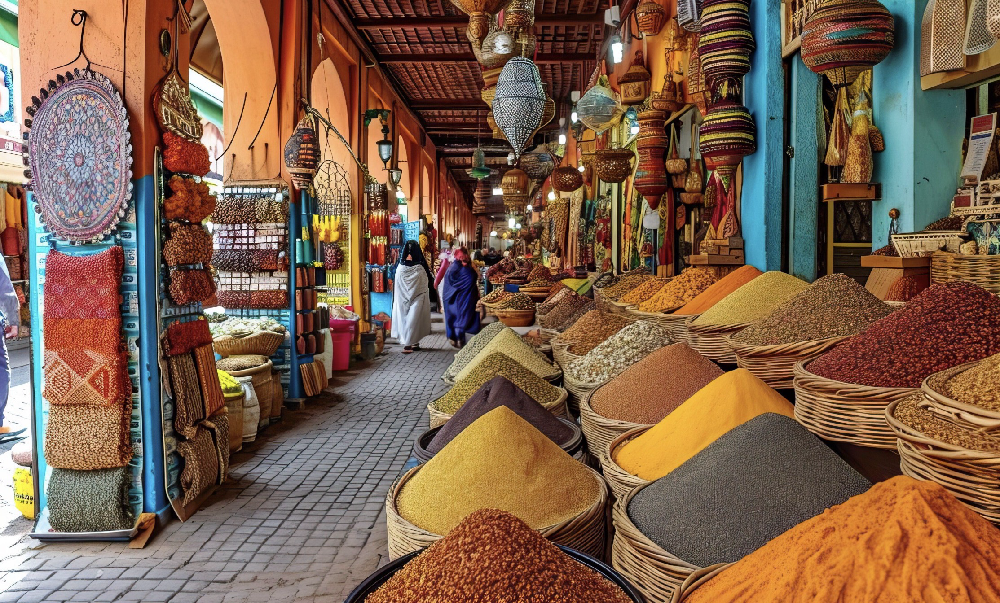

Marrakech · il Marocco più intenso
01 · Cultura e folklore
Marrakech
Il punto di partenza e il cuore più intenso del viaggio. Medina, souk, architettura, colori, profumi e piazze raccontano quel lato vivace e folkloristico che rende Marrakech immediatamente riconoscibile.